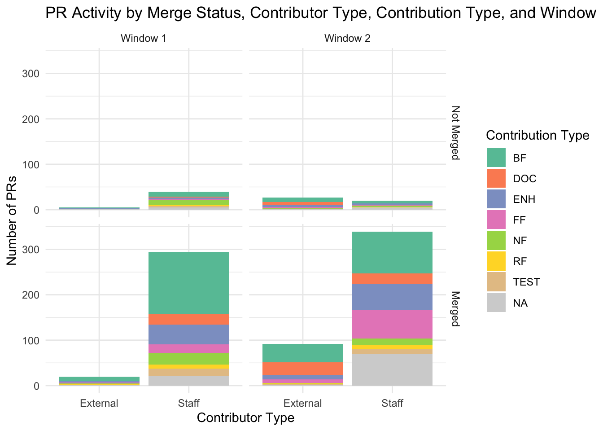
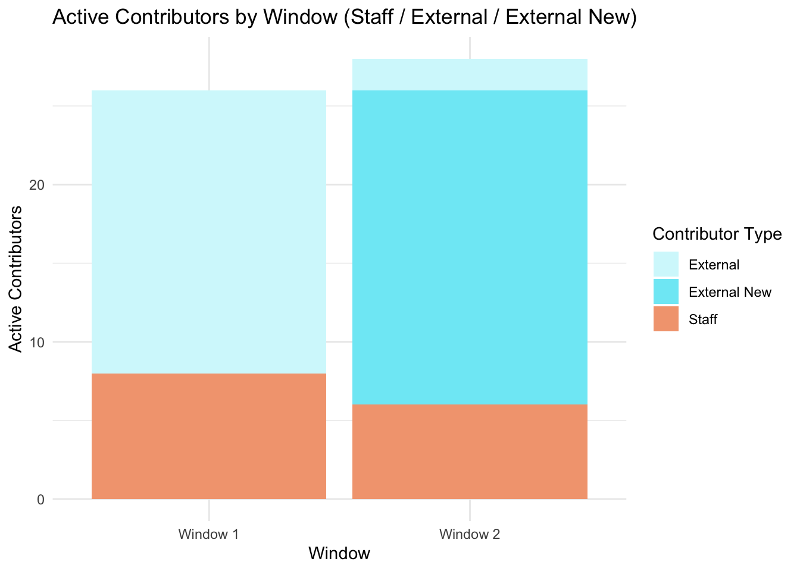

Github Data Summary
Introduction
To parallel our survey, we wanted to also observe if any changes were observed in the GitHub data itself. We therefore assessed pull request activity (number of PRs opened, merged, and closed), the nature of pull requests (including size (number of lines changed) and type, labeled as follows: BF – Bug Fix, FF – Feature Fix, RF – Refactor, NF – New Feature, ENH – Enhancement to existing code, DOC – Documentation, TEST – Adding or modifying tests, or unlabeled), contributor engagement (number of active contributors, new vs returning contributors, and PRs per contributor), and PR dynamics (time to merge and number of comments), disaggregated by contributor type (staff vs external). We chose two windows to analyse these factors: Window 1: 28 May 2022 – 27 Nov 2022, Window 2: 28 May 2024 – 27 Nov 2024, thus each window was sampled 6 months prior to the dissemination of each survey. These windows were selected to give equal length at each timepoint, whilst also allowing a wide enough window to capture meaningful activity and avoiding seasonal mismatches between sampling points.
Analysis and Results
Data were pulled from the PsychoPy github repository https://github.com/psychopy/psychopy from two time windows Window 1: 28 May 2022 – 27 Nov 2022, Window 2: 28 May 2024 – 27 Nov 2024. We identified github author names known to be internal staff to Open Science Tools (the social enterprise maintaining PsychoPy), so that we could seperately analyse External and Staff contributions.
Pull Request Activity and Nature
We assessed Pull Request (PR) activity in each Time Window by Contributor Type (Staff vs. External). We also separated this by Merge status (Merged or Not Merged) and Contribution Type (BF – Bug Fix, FF – Feature Fix, RF – Refactor, NF – New Feature, ENH – Enhancement to existing code, DOC – Documentation, TEST – Adding or modifying tests, or unlabeled). The results are shown in Figure XXX, and exact figures shown in Supplementary Table S1. We also examined the size of Pull Requests (Full table Supplementary S2).
At Time Window 2 there were more pull requests made by External contributors compared with Time Window 1. The nature of these PRs descriptively changed between time windows. At Time Window 1 most PRs from External contributors were Bug Fixes (BF), and no contributions were to changes in documentation (DOC). At Time Window 2, most PRs from External contributors were still Bug Fixes, but this was followed by 27 PRs that were documentation changes. Notably, many of these changes were to add translations to the software (in particular to Arabic, Spanish and Portuguese) - likely reflecting an impact of translator workshops hosted between time windows.
Across the two time windows, Pull Request (PR) sizes were generally small, particularly for those that were merged. At Time Window 1, the median size of merged PRs was slightly smaller for External contributors (median = 10.5 lines, mean = 284.3, SD = 566.9) than for Staff contributors (median = 20.5 lines, mean = 1559.3, SD = 19,755.9), whereas non-merged PRs were larger for External contributors (median = 283 lines, mean = 66,954.6, SD = 148,865.5) than for Staff (median = 113 lines, mean = 1007.7, SD = 3,552.4). Notably, the high degree of variability in non merged PRs reflect the presence of large outlier changes. At Time Window 2, median PR sizes were more similar between contributor types (External = 17 lines, mean = 397.0, SD = 1,692.5; Staff = 21 lines, mean = 313.0, SD = 1,502.0), both for merged and non-merged PRs. The variability of PR size also reduced between time windows. Overall, these results suggest that between time windows the size of PR’s accepted to the repository from External and Staff contributors became more similar between time windows. This might also reflect the impact of events between time windows, such as workshops, which may have influenced the stylistic choice of external contributors in their PR activity.
| Window | Merge Status | Contributor Type | Contribution Type | Number of PRs |
|---|---|---|---|---|
| Window 1 | Not Merged | External | BF | 2 |
| Window 1 | Not Merged | External | ENH | 1 |
| Window 1 | Not Merged | External | RF | 1 |
| Window 1 | Not Merged | External | NA | 1 |
| Window 1 | Not Merged | Staff | BF | 11 |
| Window 1 | Not Merged | Staff | DOC | 2 |
| Window 1 | Not Merged | Staff | ENH | 4 |
| Window 1 | Not Merged | Staff | FF | 2 |
| Window 1 | Not Merged | Staff | NF | 10 |
| Window 1 | Not Merged | Staff | RF | 3 |
| Window 1 | Not Merged | Staff | TEST | 3 |
| Window 1 | Not Merged | Staff | NA | 5 |
| Window 1 | Merged | External | BF | 10 |
| Window 1 | Merged | External | ENH | 3 |
| Window 1 | Merged | External | FF | 2 |
| Window 1 | Merged | External | NF | 2 |
| Window 1 | Merged | External | RF | 2 |
| Window 1 | Merged | External | NA | 1 |
| Window 1 | Merged | Staff | BF | 136 |
| Window 1 | Merged | Staff | DOC | 24 |
| Window 1 | Merged | Staff | ENH | 43 |
| Window 1 | Merged | Staff | FF | 19 |
| Window 1 | Merged | Staff | NF | 26 |
| Window 1 | Merged | Staff | RF | 9 |
| Window 1 | Merged | Staff | TEST | 15 |
| Window 1 | Merged | Staff | NA | 22 |
| Window 2 | Not Merged | External | BF | 10 |
| Window 2 | Not Merged | External | DOC | 7 |
| Window 2 | Not Merged | External | ENH | 4 |
| Window 2 | Not Merged | External | FF | 3 |
| Window 2 | Not Merged | External | NF | 1 |
| Window 2 | Not Merged | External | NA | 2 |
| Window 2 | Not Merged | Staff | BF | 6 |
| Window 2 | Not Merged | Staff | ENH | 3 |
| Window 2 | Not Merged | Staff | FF | 2 |
| Window 2 | Not Merged | Staff | NF | 3 |
| Window 2 | Not Merged | Staff | RF | 1 |
| Window 2 | Not Merged | Staff | NA | 5 |
| Window 2 | Merged | External | BF | 41 |
| Window 2 | Merged | External | DOC | 27 |
| Window 2 | Merged | External | ENH | 10 |
| Window 2 | Merged | External | FF | 8 |
| Window 2 | Merged | External | NF | 1 |
| Window 2 | Merged | External | RF | 2 |
| Window 2 | Merged | External | TEST | 1 |
| Window 2 | Merged | External | NA | 2 |
| Window 2 | Merged | Staff | BF | 92 |
| Window 2 | Merged | Staff | DOC | 23 |
| Window 2 | Merged | Staff | ENH | 58 |
| Window 2 | Merged | Staff | FF | 62 |
| Window 2 | Merged | Staff | NF | 15 |
| Window 2 | Merged | Staff | RF | 9 |
| Window 2 | Merged | Staff | TEST | 10 |
| Window 2 | Merged | Staff | NA | 70 |
Contributor Engagement
We explored if the number of new External contributors increased. In Window 1, there were 8 Staff and 18 External contributors. In Window 2, there were 6 Staff, 2 External (returning from Time Window 1), and 20 new External contributors. The number of contributors were therefore roughly similar between timepoints, but a large proportion of external contributors at Time Window 2 were new.

In Window 1, there were 8 Staff and 18 External contributors. In Window 2, there were 6 Staff, 2 External, and 20 new External contributors. The number of contributors were therefor roughly similar between timepoints, but a large proportion of external contributors at timepoint 2 were new.
Supplementary Material
To better understand the nature of engagement, we examined total lines changed per pull request.
| Window | Contributor_Type | Merged | Count | Mean | Median | SD | Min | Q1 | Q3 | Max |
|---|---|---|---|---|---|---|---|---|---|---|
| Window 1 | External | FALSE | 5 | 66954.60 | 283.0 | 148865.48 | 20 | 60.00 | 1158.00 | 333252 |
| Window 1 | External | TRUE | 20 | 284.30 | 10.5 | 566.93 | 2 | 3.00 | 257.25 | 2194 |
| Window 1 | Staff | FALSE | 40 | 1007.70 | 113.0 | 3552.44 | 0 | 24.75 | 507.50 | 22222 |
| Window 1 | Staff | TRUE | 294 | 1559.26 | 20.5 | 19755.89 | 0 | 5.00 | 98.50 | 336874 |
| Window 2 | External | FALSE | 27 | 1508.74 | 35.0 | 3109.07 | 2 | 8.50 | 288.00 | 9471 |
| Window 2 | External | TRUE | 92 | 397.00 | 17.0 | 1692.49 | 1 | 5.75 | 71.25 | 12958 |
| Window 2 | Staff | FALSE | 20 | 249.15 | 76.5 | 432.48 | 3 | 22.00 | 280.50 | 1885 |
| Window 2 | Staff | TRUE | 339 | 312.96 | 21.0 | 1501.98 | 1 | 5.00 | 78.00 | 15071 |